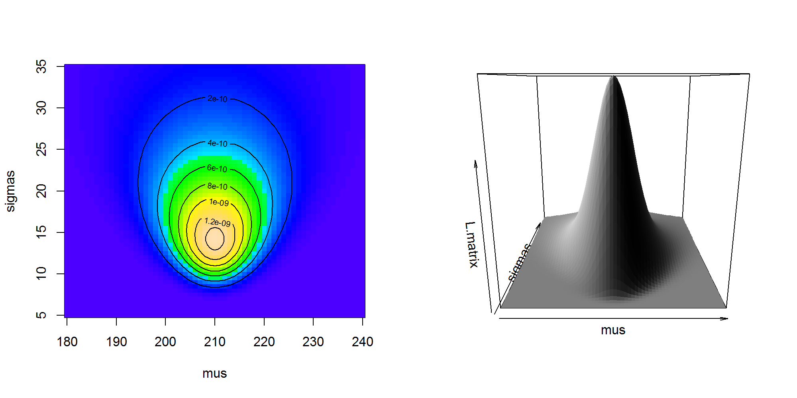
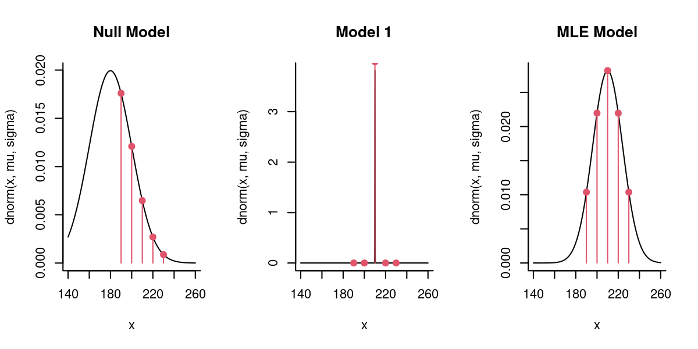
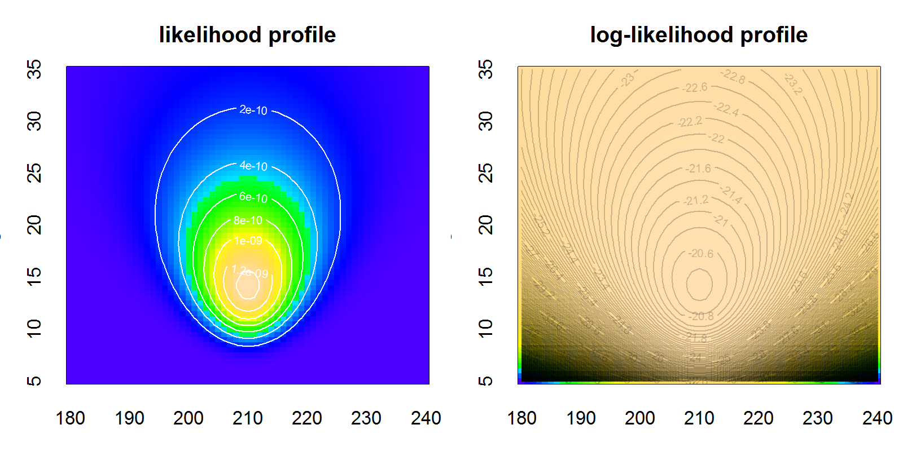
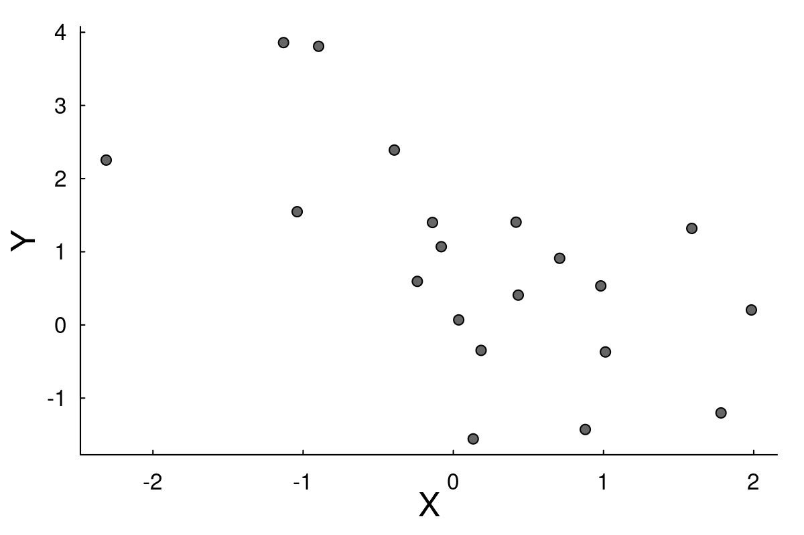
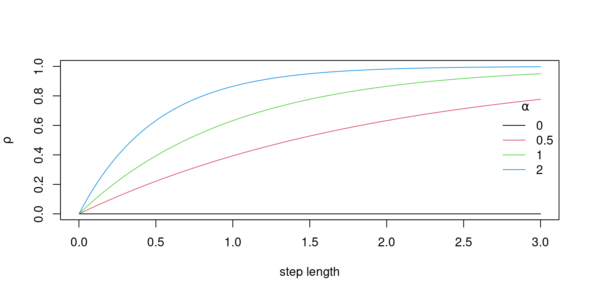
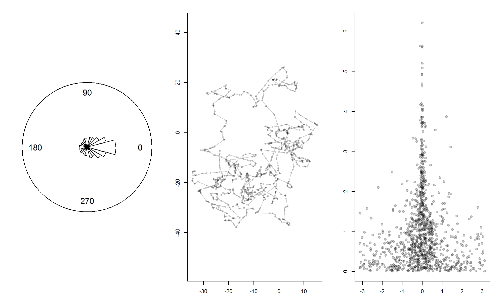
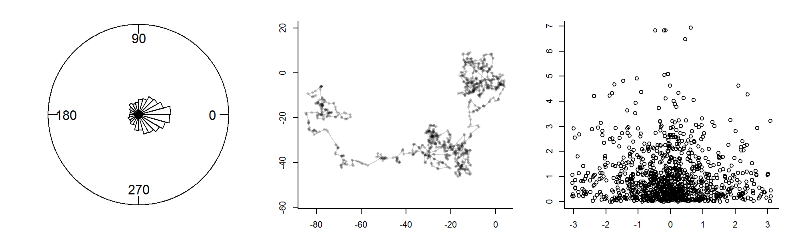
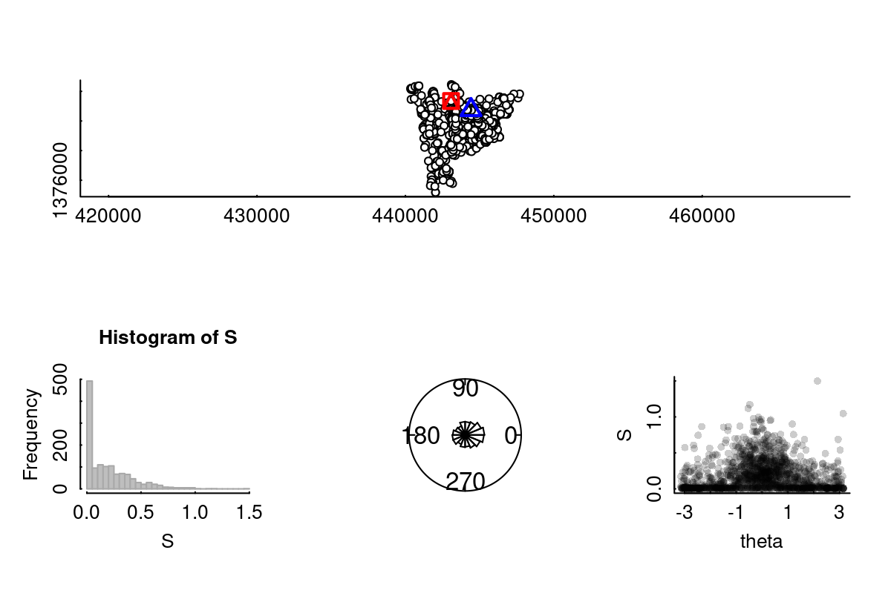

8 Likelihood Theory
Implementation and Applications
\[\huge {\cal L}(\Theta | {\bf X}) = \Pr({\bf X} | \Theta)\]
8.1 Why a chapter on Likelihoods?
The likelihood function is the single most important, versatile, and widely-used tool for performing inference. It is the natural link between observations (i.e. data) and probabilistic models (i.e. statistical models). The overwhelming majority of statistical analyses - certainly in wildlife ecology - in which models are specified and fitted and selected and hypothesis tests are performed in the service of inferential conclusions, relies on defining and computing a likelihood function and figuring out a way to maximize it. The parameters fitted using this basic strategy - the maximum likelihood estimators (MLE’s) have some very powerful and convenient properties. For example, the standard errors around those estimates can be computed quickly and efficiently - using almost the same process that maximized the likelihood - and that MLE’s are proven to have the smallest standard errors (i.e. are the most precise) estimators. Furthermore, likelihoods underlie rigorous hypothesis tests, e.g. via likelihood ratio tests, and even more flexible (and extremely widely used) information criterion-based model comparison tools, like AIC, BIC, and others. And as important as likelihoods are to classical inference, they are equally essential to understanding and implementing Bayesian inference.
Despite all of these frankly astonishing properties, likelihoods are almost never taught explicitly in courses - outside of statistics departments, and even then often only in graduate school. Highly literate and skilled quantitatively minded practitioners can be hard pressed to even define a likelihood. While there is a bit of conceptual leap (or inversion) in understanding what a likelihood actually is (the equation at the top of the chapter sums it up entirely) - they are, in fact, straightforward to understand and to communicate. That, at least, is the central hypothesis of this chapter.
Much of the magic of likelihoods is, perhaps, obscured by the fact that they are hidden behind the black-box of statistical tools in statistical software and the limited1 set of models and model assumptions that you can fit with those tools. But if you can write your own likelihood, then you can fit models that are not nearly as straightforward as the ones in the black boxes. Given the many non-standard nuances of movement data (see chapter Chapter 3), it is very, very easy to come up with a particular piece of inference for which you will want to design your own likelihood function. We provide one example at the end of this chapter.
1 In the lively, teeming, global activity of applied statistics, there is, obviously, a tremendous proliferation of models that can be fitted with “out-of-the-box” tools. Starting with linear models, through mixed additive generalized linear models, to hidden Markov models, to models with explicit spatial and temporal auto-correlation, and on and on. But the world (or at least the processes and data that we might want to model) is orders of magnitude more complex than all the black boxes put together.
8.1.1 A short definition of a likelihood
Likelihoods turn probabilities on their heads.

8.1.2 Not helpful!
Ok, a probability statement (or, perhaps better, a probability question) asks: \(\Pr({\bf X}|\theta)\)? I.e. what is the probability (i.e. a score between 0 and 1 that reflects the likelihood of an occurrence) of a particular event (or observation or data, \(\bf X\)) given a particular model (or parameter set, \(\Theta\)). A likelihood statement asks the opposite question: \({\cal L}(\Theta | {\bf X})\), i.e. what is the likelihood of a particular model (\(\Theta\)) given a particular set of observations (\(\bf X\)).
Even at this abstract level, it should be clear the the likelihood question is the more relevant one for inference. Since we do not know any probabilistic models, except for all those completely artificial games that are played in probability class, like flipped coins, and six-sided dice, and decks of cards, and mysterious urns with different colored balls.2 For every other application, we can make observations (collect \(\bf X\)) and what we want to know is what’s good model (\(\Theta\)).
2 The mathematical foundations probability theory are disproportionately due to the idle gambling games of French noblemen in the 17th century, who happened to be acquainted with some pretty bright bulbs.
8.1.3 Please give me an example!
Ok, let’s build off a specific example. Imagine, we know the true distribution of adult human (Homo sapiens) male heights, is 175 cm (5’ 9’’), with a standard deviation of 20 cm and that the distribution is Gaussian or normal. We notate this as: \[X \sim {\cal N}(\mu_0 = 175, \sigma_0 = 20)\]
This is a probability model, i.e. it tells us that: \[P(x < X < x+dx) = \phi(x|\mu, \sigma)dx\] where \(f(x|\mu, \sigma)\), is the density function of the normal distribution with \(\mu\) and \(\sigma\). As a reminder, that function looks like this: \[\phi(x|\mu, \sigma) = {1\over \sigma\sqrt{2\pi}} e^{-{1 \over 2}\left({x - \mu\over{\sigma}}\right)^2}\] and it has the familiar bell shaped curve. Recall that the 95% of the probability is within 1.96 (or, just, 2) standard deviations of the mean, thus our model states that 95% of all mean are between 135 cm (4’ 5’‘) and 215 cm (7’). Maybe this is reasonable, maybe a bit wide, but we’re assuming this is the truth.
This probability statement means you can make some definitive probabilistic statements. For example, if you got a hold of a single 210 cm (6’ 11’’) tall person, you can say with certainty that:
the probability that a person is exactly 210 cm is exactly 0. This is a fundamental property of continuous distributions: any specific event has probability 0 because it is too easy to be very very close. Or, more formally, \(dx\) in the statement above is 0.
However, the “per-cm” probability” that he is around 210 cm tall is given by the density function of the normal distribution at 210 cm
\[f(x = 210 \, | \, \mu = 175,\, \sigma = 20) = 0.0043\] i.e. the probability that a random man will be within 1 cm of 210 cm is about 0.4%. In R, this probability is given by the dnorm function.3 Note that we place the conditional notation \(|\), which is read as “given” or “conditional on”, and place our two parameters \(\mu\) and \(\sigma\) to the right. Those parameters (together with the implicit distribution) are the model \(\Theta\).
3 It is essential to learn about the notation for random variables in R! Every distribution has a “root” name (e.g. norm for normal, exp for exponential, binom for binomial). The probability density function (p.d.f.) is given by d****, the cumulative density function (c.d.f.) is given by p****, the quantile function by q**** and the random generation of samples from a distribution by r****. This may be confusing, but is extremely important.
dnorm(210, mean = 175, sd = 20)[1] 0.004313866We can compute the probability of a random male being within some range of sizes very straightforwardly as well. For example, the probability that a random male is between, say, 180 and 220 cm is computed mathematically as: \(\int_{180}^{220} \phi(x | \mu = 175, \sigma = 20)\,dx\)
and in R as:
So 39% of men (in this model) are somewhere in that interval.
8.1.4 Defining a Likelihood
This is all fine and well, but, in fact, we don’t know what the true distribution of human male adult heights is.4. Instead, you are - say - an alien (or profound amnesiac) who beams into (or comes to) onto a professional basketball court, and out trots a human male who is 210 cm tall. Aha! Data:
4 it can be argued that there is not “true distribution*, at least not without accounting for ALL the possible multiverses. But that’s outside scope of this discussion.
\[ X_1 = \{210\}\]
To “flip this on its head”“, we ask a new question: What is the likelihood that the mean and standard deviation of human heights are, in fact, 175 and 20, respectively GIVEN that we observed one male who is \(X_1 = 175\) feet tall?
We write this as: \[ {\cal L}(\mu, \sigma | x).\]
It is “flipped on its head” because it as a function of the parameters given an observation, rather than as the probability of an observation given some parameters. But, by definition, the likelihood is numerically equal to the probability:
\[L_0 = {\cal L}(\mu_0, \sigma_0 | X_1) = f(X_1|\mu_0, \sigma_0) = 0.0043\]
In colloquial language, a “likelihood” is sort of similar to a “probability” - i.e. the statement: “Event A is likely.” seems to have similar meaning to the statement: “Event A has high probability.”
In statistics, the “likelihood” and the “probability” are, in fact EQUAL! But there is an inversion of what is considered “known” and “unknow. A probability tells you something about a random event given parameter values. The likelihood tells you something about parameter values given observations. In practice - statistical inference is about having the data and guessing the parameters. Thus the concept of Likelihoods is extremely useful and natural.
A key fact to keep in mind: in contrast to probabilities, the actual raw value of the likelihood is NEVER of interest. We ONLY care about the value of a likelihood relative to likelihoods of different models. For example, we can compare the likelihood of the parameters \(\mu_0 = 180\) and \(\sigma_0 = 20\), GIVEN the observation \(X_1 = 210\), with an alternative probability model … say, \(\mu_1 = 210\) cm and \(\sigma_1 = 0.1\) cm. That likelihood is given by:
\[ L_1 = {\cal L}(\mu_1, \sigma_1 \,|\, X_1 = 7) = f(210 \,|\, 210, 0.1)\]
(L1 <- dnorm(210,210,0.1))[1] 3.989423\(L_1\) is clearly, much much greater than our original likelihood, i.e. this set of parameters is much likelier than the original set of parameters. Indeed, the ratio \(L_1 / L_0 = 92.5\). We can make an unambiguous and strong statement: Model 1 is more than 900x more likely than the Null Model!
8.1.5 Joint Likelihoods

We’re very happy with our new model (it’s 900 times better than the null model!) But are perhaps a bit uncomfortable with the small sample size. Thankfully, four more basketball players come jogging out of the locker room, we measure their heights (with our robotic alien ayes) and now have more data! Here are their heights:
\[X \sim \{190, 200, 210, 220, 230\}\] Let’s immediately capture this data in R:
X <- c(190, 200, 210, 220, 230)At this point, I might have reasonable suspicion that neither our null-model (M0) nor or adapted model (M1) might be appropriate for this subset of humans. Visualize these data-points against our null-model:
mu0 <- 180; sigma0 <- 20
curve(dnorm(x, mu0, sigma0), xlim=c(120,240), ylim = c(0, 0.02))
points(X, dnorm(X,mu0,sigma0), pch=19, col=2)
points(X, dnorm(X,mu0,sigma0), type="h", col=2)
Now, we can compute the likelihood of the null parameters given all of these observations.The likelihood (a joint likelihood) is just the product of the likelihood for each of these points, because it is equal to the joint density distribution … this is because the Probability of \(n\) independent events is the product of the probabilities:
\[{\cal L}(\mu_0, \sigma_0 | {\bf X}) = \prod_{i=1}^n f(X_i|\mu_0, \sigma_0) \]
This is a very small number, but again - it is meaningless without having a comparison. Let’s compute the joint likelihood of our alternative model:
To machine power, the second model is MUCH LESS likely than the first model! In fact, the machine can’t multiply probabilities that small and returns a 0.

You see that the points far away from the mean peak have extremely low probability, which brings the likelihood of this model way down.
8.2 The Maximum Likelihood Estimator
So - how do we find the parameters that maximize the likelihood? These parameters are called the Maximum Likelihood Estimators (MLE’s), and are the “best” parameters in that they are the most precise. Remember, every estimate is a random variable, and therefore comes with some variance[^index-5]. It can be shown that MLE’s have the smallest of those possible variances, in other words the estimates have the smallest standard error. The technical notation for a MLE is:
\[\{ \widehat{\theta_\mathrm{mle}}\} \subseteq \{ \underset{\theta\in\Theta}{\operatorname{arg\,max}}\ {\cal L}(\theta\,|\,X_1,\ldots,X_n) \}\] Translating this to English the MLE estimators of parameters \(\theta\) are those values of \(\theta\) for which the likelihood function is maximized.
Let’s look at a range of possible values for \(\widehat{\mu}\) and \(\widehat{\sigma}\) for our basketball player example. We can do this pretty efficiently in R.
First, pick some values to explore:
mus <- 180:240
sigmas <- seq(5,35,.5)Now, write a function that computes the likelihood (which, as we recall, is a function of \(\mu\) and \(\sigma\), and “assumes” \(\bf X\))
And compute this likelihood for all the combinations of \(\mu\) and \(\sigma\) above, using the mighty outer() function:
Note (as a technical aside) that to get the Likelihood() function to work within outer(), it had to be “vectorized”. Happily, there is a function (Vectorize()) that does just that.
We can visualize our likelihood profile over those ranges of \(\mu\) and \(\sigma\) using the image() and contour() commands.

Clearly, there is a sharp peak in the likelihood around \(\widehat{\mu} = 210\) and somewhere just under \(\widehat{\sigma} = 15\). From our limited sets of values, we can find the values at the maximum:
c(
mu.hat = mus[row(L.matrix)[which.max(L.matrix)]],
sigma.hat = sigmas[col(L.matrix)[which.max(L.matrix)]]
) mu.hat sigma.hat
210 14 And the (irrelevant) value of the likelihood is
max(L.matrix)[1] 1.465602e-098.2.1 Numerically finding the MLE
We don’t need to do this search ourselves - that’s why we invented electronic computing devices. The powerhouse function for optimizing functions in R is optim(), but it takes some getting used to. The (minimal) syntax is:
optim(par, fn, ...)where:
-
paris a required vector of your initial guess for the parameters. -
fn(par, ...)is a function that takes as its first argument a vector of parameterspar - The
...refers to other arguments passed tofn. Most importantly, this will be data!
An extremely important and confusing nuance to using optim is that is MINIMIZES. This is very natural, as the canonical optimization problem is the minimization of a so-called objective function. Therefore, the FUN have to return the negative of the likelihood, if we want to maximize the likelihood.
See how I make it work below, using our “naive” model (mean = 175, sd = 20) of adult male height. Note the trick of naming the parameters (p["mu"] and p["sigma"]) rather than indexing them by number - that’s all most always a good idea, especially as vectors get longer and longer. This will also come in handy when we interpret the output:
Likelihood <- function(mu, sigma, x) prod(dnorm(x, mu, sigma))
p0 <- c(mu = 175, sigma = 20)
optim(p0, function(p, x) -Likelihood(p["mu"], p["sigma"], x), x = X)$par
mu sigma
209.99981 14.14376
$value
[1] -1.466355e-09
$counts
function gradient
63 NA
$convergence
[1] 0
$message
NULLSo - lots of output, but the key numbers we’re interested in are the top two, under $par. These are: \(\widehat{\mu} = 209.998\) and \(\widehat{\sigma} = 14.144\). Good! This is consistent with our likelihood profile. The $value is very close to the (negative of the) maximum likelihood that we “hand-calculated”.
8.2.2 Comparing models side by side

You can get a feel for the constraints on the MLE model. First, it is balances around the mean value. Second, if the \(\sigma\) were smaller, the contribution of the outlying points would become much smaller and bring the likelihood down; if \(\sigma\) were any larger, then the flattening would bring down too far the contribution of the central points.
8.2.3 Comparing with Method of Moment Estimators (MME’s)
Now … you might think that’s a whole lot of crazy to estimate a simple mean and variance. You may have guessed that the best estimate of the mean is the sample mean:
\[\widehat{\mu} = \overline{X} = {1\over n} \sum_{i=1}^n X_i\] and the standard deviation is best estimated by the sample standard deviation:
\[\widehat{\sigma^2} = s_x^2 = {1\over n-1}\sum (X_i - \overline{X})^2\] The mean estimate matches, but the sample standard deviation doesn’t quite:
sd(X)[1] 15.81139This suggests that the MLE of the variance - for all of its great qualities - is at least somewhat biased (remember: \(E(s_x^2) = \sigma^2\)).
Can you recognize what analytical formula gives the MLE of \(\sigma\)?
Note: this is a special case where the MLE is actually computable by hand, but in general it is not - and best to obtain numerically, as the examples that follow show.
8.2.4 Log-likelihoods
For a combination of practical and theoretical reasons, what we actually maximize is not the likelihood but the log-likelihood. The maximum will be in the same place for both functions, since \(\log(x)\) is a monotonic function, but logs are much easier to work with. Notably, the log function converts products (which either explode or - in the case of probability - collapse to very very near zero very very quickly), into tidy sums:
Likelihood: \[{\cal L}(\mu_0, \sigma_0 | {\bf X}) = \prod_{i=1}^n f(X_i|\mu_0, \sigma_0) \]
Log-likelihood: \[{\cal l}(\mu_0, \sigma_0 | {\bf X}) = \log({\cal L}) = \sum_{i=1}^n \log(f(X_i|\mu_0, \sigma_0)) \]
Sums are much easier to manipulate with algebra and handle computationally than products. Also, they help turn very very very small numbers and very very very large numbers to very very very ordinary numbers.5
5 The number of particles in the universe is about 10^80 … its log is 184. The ratio of the mass of an electron to the size of the sun is 10^-60 … its log is -134. Even I can count to -134.

Because the log ofa probability is such an important quantity, in R there is always a default log = TRUE/FALSE option in its distribution functions. And the optim function6 much, much prefers optimizing over sums than over probabilities. Putting that together here:
6 Which, to be clear, can be infuriatingly finnicky!
logLikelihood <- function(mu, sigma, x)
sum(dnorm(x, mu, sigma, log = TRUE))
optim(c(mu = 175, sigma = 20),
function(p, x) -logLikelihood(p["mu"], p["sigma"], x = X))$par
mu sigma
210.00200 14.14072
$value
[1] 20.34049
$counts
function gradient
61 NA
$convergence
[1] 0
$message
NULLThe calcualtion is nearly instant, the parameters are very close, and the maximum log-Likelihood is -20.34.
8.2.5 Confidence Intervals
8.2.5.1 A bit of theory
The peak of the (log)-likelihood surface gives you point estimates of parameters. But likelihood theory provides an additional enormously handy (asymptotically correct) result with respect to standard errors around the estimates. Specifically (in semi-precise English words): The variance around the point estimates is equal to the negative reciprocal of the second derivative of the log-likelihood at the maximum.
While that might seem like a mouthful of twists (negatives! reciprocals! derivatives!), this is actually a very intuitive result. Basically: the sharper the peak of the likelihood mountain, the more negative the second derivative, the smaller the (positive) variance. In contrast, a flat peak will have a less negative second derivative, and the estimate will have a larger the variance.
All of the above is true in one dimension. But in almost all cases you are estimating multiple parameters. No worries, the principle and practice is the same, but the jargon (and underlying math) is a bit fancier.
the Hessian is an n-dimensional second derivative - i.e. a matrix that summarizes the sharpness of the peak.
the Fisher Information (\(\cal{I}\)) is - specifically - the Hessian of the log-likelihood.
the inverse is the n-dimensional equivalent of “reciprocal”.
\(\Sigma\) is the variance-covariance matrix of the parameter estimates.
With that in mind, the (asymptotically correct) variance of a maximum likelihood estimator is given by the following compact formula:
\[\Sigma(\theta) = {\cal I}(\theta)^{-1}\]
8.2.5.2 Application
So - four steps: (1) obtain the Hessian, (2) take its inverse, and (3) take the square root of the diagonals of the matrix to get standard errors, and (4) convert to confidence intervals.
- The hardest bit (numerically speaking) is to calculate the Hessian, but our workhorse
optim()is happy to provide it with thehessian = TRUEargument:
logLikelihood <- function(mu, sigma, x)
sum(dnorm(x, mu, sigma, log = TRUE))
param.fit <- optim(c(mu = 180, sigma = 20),
function(p, x) -logLikelihood(p["mu"], p["sigma"], x),
x = X, hessian=TRUE)
param.fit$hessian mu sigma
mu 2.500419e-02 1.329514e-05
sigma 1.329514e-05 5.002096e-02- In R, the inverse of a matrix (in R) is given (somewhat unintuitively) by the
solve()function. The inverse of the hessian is the variance-covariance matrix of the parameter estimates. It is worth pausing here to make sure that they are not too correlated, which is the meaning of the off-diagonal elements of this matrix:
(Sigma <- solve(param.fit$hessian)) mu sigma
mu 39.99330163 -0.01062988
sigma -0.01062988 19.99162241- The square root of the diagonal gives standard errors
- And the confidence intervals are just:
cbind(hat = param.fit$par,
CI.low = param.fit$par - 1.96*se,
CI.high = param.fit$par + 1.96*se) hat CI.low CI.high
mu 209.99624 197.6012 222.3913
sigma 14.14095 5.3774 22.9045
optim: Is the engine under a great many hoods of R functions!

optim. For a wonky history into optim’s plusses and minusses, see this insightful blog post.8.3 Testing hypotheses and model selection with likelihoods
8.3.1 Likelihood Ratio Test:
Model 0 and Model 1 are NESTED
(i.e. Model 0 is a special case of Model 1) with \(k_0\) and \(k_1\) parameters.
Compute MLE’s: \(\widehat{\theta_0}\) and \(\widehat{\theta_1}\)
Compute likelihoods: \({\cal L_0(\theta_0|X)}\) and \({\cal L_1(\theta_1|X)}\)
important: the data \(X\) must be identical!
Likelihood Ratio Test Statistic: \[\Lambda = -2 \log \left( \frac{L_0}{L_1} \right) = 2 (l_1 - l_0)\]
under Null hypothesis (i.e. Model 1) has distribution \(\Lambda \sim \text{Chi-squared} (d.f. = k_1 - k_0)\)
8.3.1.1 An example
We will use home-made likelihoods to dig into the simplest and most familiar linear regression. In the simulated data below, there is considerable noise on a possible negative relationship between X and Y:

We have two competing models: \[M0: Y_i = \beta_0 + \epsilon_i\] \[M1: Y_i = \beta_0 + \beta_1 X_i + \epsilon_i\] where \(\epsilon\) are i.i.d. Gaussian residuals.
We defining (negative) log-likelihood functions for this linear regression. Note that this time, we have two data objects in our likelihood: X and Y.
We use optim to obtain estimates:
Inspect the parameters:
fit0$par beta0 sigma
1.2506021 0.9163669 fit1$par beta0 beta1 sigma
1.1670651 -0.4251247 0.8429260 And performing the test. Recall - the likelihood ratio is the difference of the log-likelihoods, and that the log-likelihood is the negative of the value that has been optimized. The degrees of freedom is just the difference between the number of parameters in model 1 (3 parameters) and model 2 (1 parametr)
LRT <- 2*(-fit1$value + fit0$value)
1 - pchisq(LRT, df = 1)[1] 0.06770992So there is a significantly negative slope. Of course, we can make that inference also by looking at the confidence intervals around that estimate:
fit1 <- optim(c(beta0 = 0, beta1 = 0, sigma = 1), LL1, X = X, Y = Y, hessian = TRUE)
se <- sqrt(diag(solve(fit1$hessian)))
cbind(hat = fit1$par, se,
CI.low = fit1$par - 1.96*se,
CI.high = fit1$par + 1.96*se) hat se CI.low CI.high
beta0 1.0165368 0.2610965 0.5047878 1.5282859
beta1 -0.8858764 0.2486389 -1.3732086 -0.3985443
sigma 1.1472530 0.1814175 0.7916746 1.5028314The slope parameter’s confidence intervals are well below 0. Note that the true values I used were \(\beta_0 = 1, \beta_1 = -0.8, \sigma = 1\), so rather excellent estimates. It’s always fun to compare these with the R function that does this the way you’d ordinarily do this:
Estimate Std. Error t value Pr(>|t|)
(Intercept) 1.0165030 0.2751980 3.693715 0.001661759
X -0.8858727 0.2620676 -3.380321 0.003333638The estimates are extremely similar! But isn’t it somehow more satisfying to have written the likelihood function oneself? Like eating a home-baked cake over a store-bought cake.
8.3.2 Information Criteria
If models are not nested (most interesting sets of models aren’t) we can’t use a likelihood ratio test. Instead, we use the very very widely applied Akaike Information Criterion (AIC), which is given by a very simple formula of the likelihood:
\[ AIC = - 2 \log(\cal L) + 2 k\]
where \(k\) is the number of parameters you estimated. As a rule of thumb, the lowest AIC is best, and models that have a difference within 2 AIC are considered … preferred. Or, even, best. Not exactly “significant”, but there is no real test anymore, just a broad comparison.
c(AIC0 = 2*(fit0$value + 2*2),
AIC1 = 2*(fit1$value + 2*3)) AIC0 AIC1
61.26318 74.24919 Alternatively, the Bayesian Information Criterion (BIC) \[ BIC = - 2 \log(\cal L) + k \log(n) \]
BIC0 BIC1
65.24611 80.22359 Which? Why? - a complicated debate, different underlying assumptions But generally - if you want to be more parsimonious (i.e. protect from overfitting) BIC is a better bet.
8.3.3 In summary
If you have data and you can write a probability model in terms of parameters, no matter how strange or arbitrary seeming, there’s a good chance you can 1. estimate those parameters, 2. compare competing models, and 3. obtain confidence intervals. Amazing!
8.4 Applying likelihoods to the Correlated Random Walk
We have seen that movement data often has:
- Skewed, Positive, step Length Distribution
- Wrapped turning angle distributions, clustered around 0^o

This combination is known as the Correlated Random Walk (CRW) model, probably the most commonly used basic movement model in ecology (Kareiva and Shigesada (1983) coined the term, but Patlak (1953) really analyzed the heck out of it in a largely forgotten work decades earlier).
Typical step-length model - the Weibull distribution: \[f(x;\alpha, \beta) = \frac{\alpha}{\beta}\left(\frac{x}{\beta}\right)^{\alpha-1}e^{-(x/\beta)^{k}}\] \(\alpha\) and \(\beta\) are the shape and scale parameter, respectively. In R, it’s given by the dweibull() function.
curve(dweibull(x, 1, 2), xlim=c(0,6), ylim=c(0,1.2), ylab="density", xlab="", col=2)
curve(dweibull(x, 2, 2), add=TRUE, col=3)
curve(dweibull(x, 6, 2), add=TRUE, col=4)
legend("topright", col=2:4, lwd=2, legend=c(1,2,6), title="Shape parameter", bty="n", cex=1.5)
A common turning angle model - wrapped Cauchy distribution: \[f(\theta|\mu,\kappa)=\frac{1}{2\pi}\,\,\frac{\sinh\kappa}{\cosh\kappa-\cos(\theta-\mu)}\] where \(\mu\) is the mean angle (usually 0) and \(\kappa\) is clustering parameter. This parameter, which ranges from -1 to 1, is conveniently estimated (using methods of moments) as the average cosine of the turning angles: \(E(cos(\theta))\). The wrapped Cauchy distribution is in the CircStats package, under dwrpcauchy().
require(CircStats) # NOT in base!
curve(dwrpcauchy(x, 0, 0), xlim=c(-pi,pi), ylim=c(0,1.5), lwd=2, ylab="density", xlab="", col=2)
curve(dwrpcauchy(x, 0, 0.5), add=TRUE, col=3)
curve(dwrpcauchy(x, 0, 0.8),add=TRUE, col=4, n=1001)
legend("topright", col=2:4, legend=c(0,0.5,0.8), title="Shape parameter", bty="n", cex=1.5, lwd=2)
8.4.1 MLE of Weibull parameters
Here’s some sample data:

A function that returns the likelihood as a function of the parameters and data
Run the optimization:
$par
shape scale
2.389178 2.438174
$value
[1] 134.0826
$counts
function gradient
67 NA
$convergence
[1] 0
$message
NULLVisually assess the fit:
hist(Mod(diff(Z)), freq=FALSE, col="grey", breaks=10)
curve(dweibull(x, Weibull.fit$par["shape"], Weibull.fit$par["scale"]), add=TRUE, col=2, lwd=2)
Not Bad! Using this technique to estimate \(\widehat{\kappa}\) is left as an exercise.
8.5 Now for something really fancy
Namely, a step length - turning angle dependency model! It is an unwritten assumption in the CRW literature that step lengths and turning angles are (statistically) independent. In fact, it seems quite plausible that longer step lengths would be associated with more directed movements. I have never seen anyone explicitly test that hypothesis, except in the (very common) context of separating movements into multiple states.
So, let use write down a model that has the property we hypothesize to be true for many animals - i.e. longer step-lengths are more directed. One model that would capture that would make the \(\kappa\) coefficient a function of step length, e.g.: \[ \kappa_i = \kappa_0 + (1-\kappa_0) (1 - \exp(\alpha S_i))\]
s <- .5
kappa0 <- 0.2
f <- function(x, kappa0=0, alpha=1) kappa0 + (1-kappa0)*(1-exp(-alpha*x))
alphas <- c(0,0.5,1,2)
plot(0,0,type="n",xlim=c(0,3), ylim=c(0,1), ylab=expression(kappa), xlab = "step length")
for(i in 1:length(alphas))
curve(f(x, alpha = alphas[i]), add=TRUE, col=i)
legend("right", col=1:4, legend = alphas, lty=1, title=expression(alpha), bty="n")
Here, the \(\kappa_0\) is a base line clustering, and \(\alpha\) is a strength of the dependence on step lengths; these are similar to intercepts and slopes.
Let’s see how this model looks, by simulating the process and visualizing:
# initailize parameter values
kappa0 <- 0.2; alpha <- 1
S <- rexp(1000)
funkykappa <- function(x, kappa0, alpha) kappa0 + (1-kappa0)*(1-exp(-alpha*x))
theta <- rwrpcauchy(1000, location = 0, rho = funkykappa(S, kappa0, alpha))
# constrain theta to -pi to pi
theta[theta > pi] <- theta[theta > pi] - 2*pi
# rose diagram of turning angles
rose.diag(theta, bins=24)
# plot the movement from steps and angles
phi <- cumsum(theta)
dZ <- complex(arg = phi, mod = S)
Z <- cumsum(dZ)
plot(Z, type="o", asp=1, pch=16, cex=0.7, col=rgb(0,0,0,.2))
plot(theta, S, pch=19, col=rgb(0,0,0,.2))
This movement looks similar to the other track, but the longer steps are more linear. The third plot illustrated the relationship between smaller turning angles and longer step-lengths, though it is quite noisy.
8.5.1 Estimating the parameters
Can we pick out the relationship? Estimate those parameters?
The negative log-likelihood function of this model given the data is:
\[{\cal l} = \log({\cal L}(\kappa_0, \alpha | {\bf S}, {\bf \theta})) = \sum_{i=1}^n \log(f(S_i, \theta_i | \kappa_0, \alpha) \]
Encode in R:
FunkyModel.Likelihood <- function(p, S, theta){
kappa <- f(S, p["kappa0"], p["alpha"])
-sum(log(dwrpcauchy(theta, 0, kappa)))
}and run the optim() function. Remember: the optim() function takes as the first argument a vector of initial guesses for the parameter values (I arbitrarily entered 0 and 0), the function that needs to be minimized (in this case the negative log likelihood) and any data that actually enters the log-likelihood function.
(funkymodel.fit <- optim(c(kappa0 = 0, alpha = 0), FunkyModel.Likelihood,
S = S, theta = theta, hessian = TRUE))$par
kappa0 alpha
0.1948638 0.9803800
$value
[1] 1082.114
$counts
function gradient
51 NA
$convergence
[1] 0
$message
NULL
$hessian
kappa0 alpha
kappa0 1319.3033 816.3407
alpha 816.3407 1171.1951The original parameter values were 0.2 and 1 … so the maximum likelihood estimates are pretty good! Parameters and standard errors:
funkymodel.fit$par rho0 alpha
0.1948638 0.9803800 rho0 alpha
0.03650750 0.03874715 Pretty precise!
Here’s a tidy function that performs the complete fit:
estimateFunkyModel <- function(steplengths, turningangles, p0 = c(kappa0 = 0, alpha = 0)){
funkykappa <- function(x, kappa0, alpha) kappa0 + (1-kappa0)*(1-exp(-alpha*x))
FunkyModel.Likelihood <- function(p, S, theta){
kappa <- funkykappa(S, p["kappa0"], p["alpha"])
-sum(log(dwrpcauchy(theta, 0, kappa)))
}
fit <- optim(p0, FunkyModel.Likelihood,
S = steplengths, theta = turningangles, hessian = TRUE)
se <- sqrt(diag(solve(fit$hessian)))
data.frame(estimate = fit$par, CI.low = fit$par - 2*se, CI.high = fit$par + 2*se)
}Let’s test it!
estimateFunkyModel(steplengths = S, turningangles = theta) estimate CI.low CI.high
rho0 0.1948638 0.1218488 0.2678788
alpha 0.9803800 0.9028857 1.0578743Those confidence intervals are really tight, and very significantly different from 0. This model clearly lets us know that that step lengths and turning angles are NOT independent.
8.5.2 Testing on a truly random walk
Let’s test this against a CRW where there is no relationship (\(\kappa_0 = 0.5, \alpha = 0\)):
S <- rexp(1000)
theta <- rwrpcauchy(1000, 0, rho=funkykappa(S, .5, 0))
theta[theta > pi] <- theta[theta > pi] - 2*pi
rose.diag(theta, bins=24)
phi <- cumsum(theta); dZ <- complex(arg = phi, mod = S); Z <- cumsum(dZ)
plot(Z, type="o", asp=1, pch=16, cex=0.7, col=rgb(0,0,0,.2))
plot(theta, S)
estimateFunkyModel(steplengths = S, turningangles = theta) estimate CI.low CI.high
rho0 0.493446206 0.44719489 0.53969752
alpha -0.009932846 -0.06916545 0.04929976The \(\kappa\) estimate is excellent (0.48 [95% C.I. - 0.43, 0.53]), and the \(\alpha\) estimate is NOT significantly different from zero. So we confirm that the turning angles and step lengths are independent.
8.5.3 Testing on some data!
There is an R package with a bunch of useful tools for analysis of animal movement and habitat use called adehabitatLT. This package contains some data on movement of an African buffalo (Syncerus caffer) in national park in Niger.
Tracks and distributions of step lengths and turning angles are illustrated below.
require(amt)
data(amt_fisher)
Leroy <- subset(amt_fisher, name == "Leroy")
Leroy <- Leroy %>% mutate(Z = x_ + 1i * y_,
dT = c(NA, difftime(t_[-1], t_[-length(t_)], units = "mins")),
steps = c(NA, diff(Z)),
steplengths = Mod(steps),
turningangles = c(NA, diff(Arg(steps)))) %>%
na.omit %>% subset(dT < 60)Extracting the relevant variables from the movement data and plotting some relationships:
plot(Leroy$Z, xlab="", ylab="", asp = 1, type = "o", cex = 0.3)
# extract step lengths (in kilometer) and turning angles
S <- Leroy$steplengths
theta <- Leroy$turningangles
hist(S, col="grey", bor="darkgrey", breaks=200)
rose.diag(na.omit(theta), bins=16)
plot(theta, S, col=rgb(0,0,0,.2), pch=16)
It is hard to see visually if there is a relationship between turning angles and step lengths. But it is easy if we can fit our model with our likelihood!
estimateFunkyModel(steplengths = Leroy$steplengths/1e2,
turningangles = Leroy$turningangles,
p0 = c(kappa0 = 0, alpha = 0)) estimate CI.low CI.high
kappa0 -0.3393364 -0.4024082 -0.2762647
alpha 0.1622015 0.1355044 0.1888986Note how strong the relationship is: \(\alpha = 0.16\), 95% C.I. (0.135, 0.189). A very strong relationship. This is (for the record) a novel result.